Little Free Library, Fall 2017

 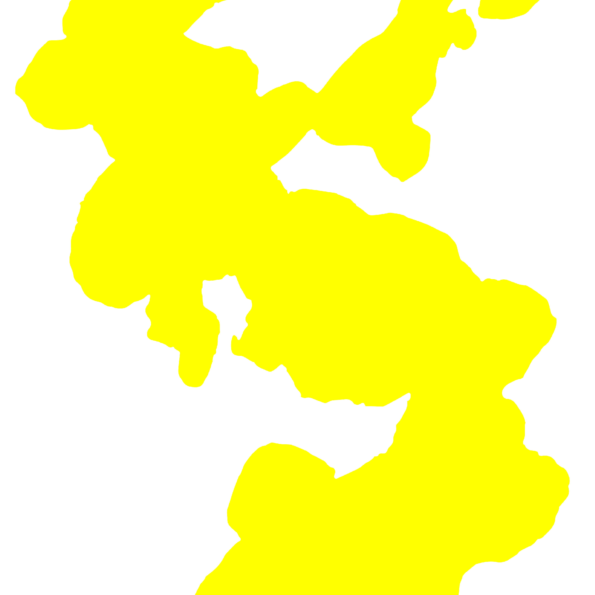
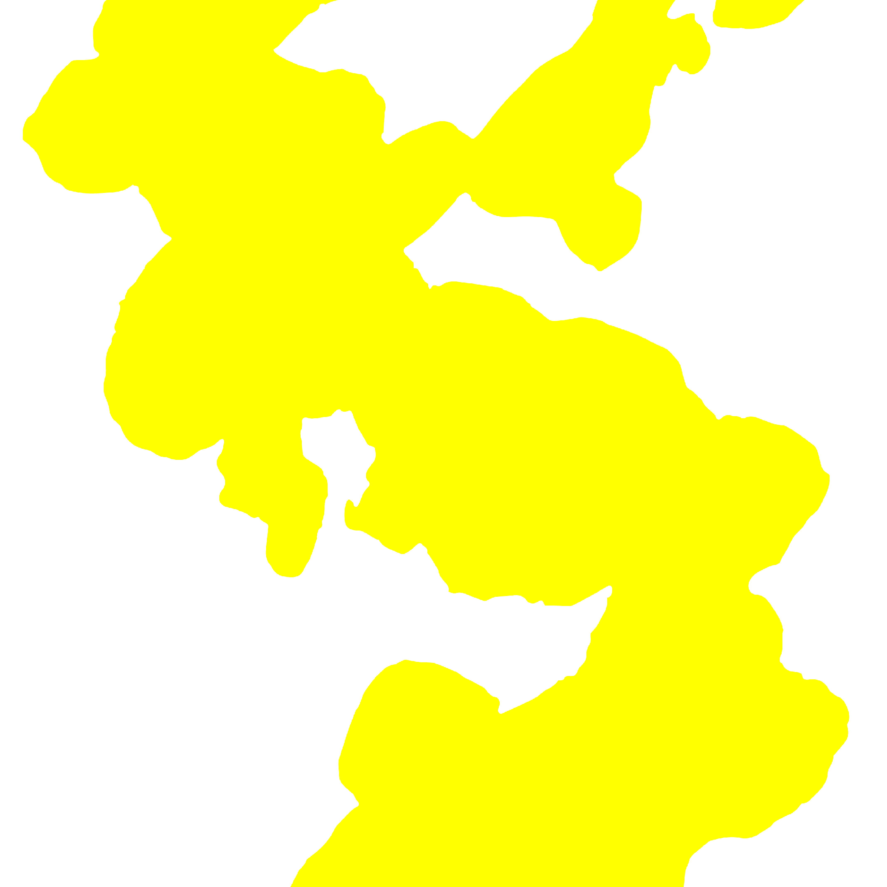
 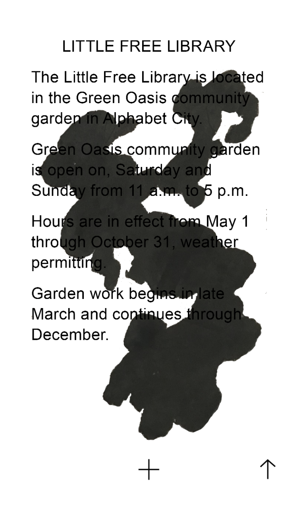
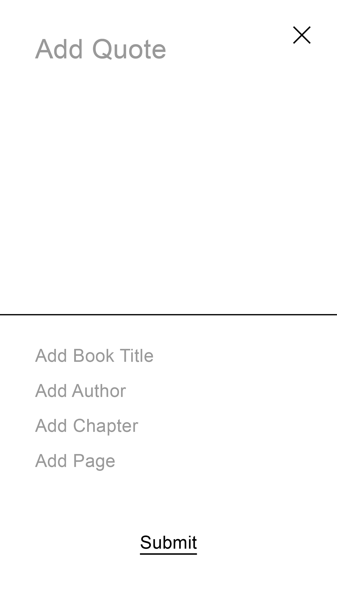
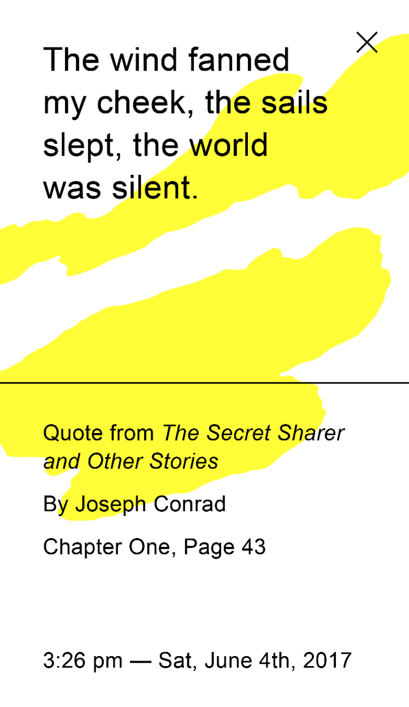
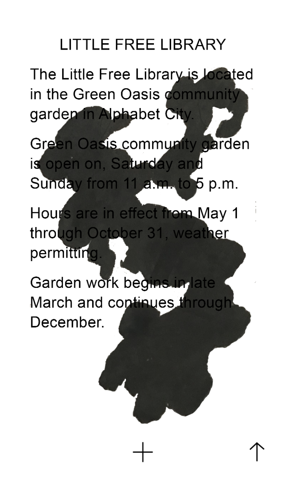
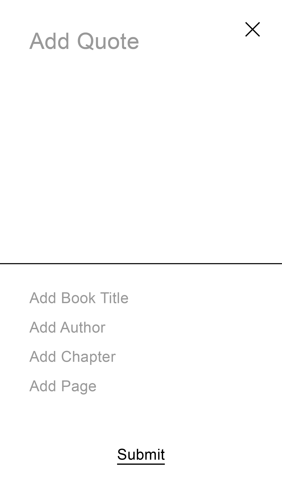
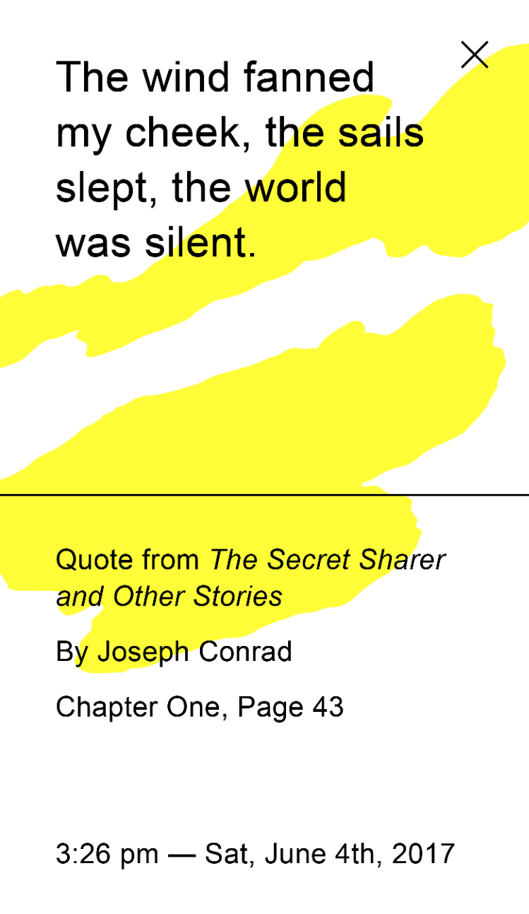

 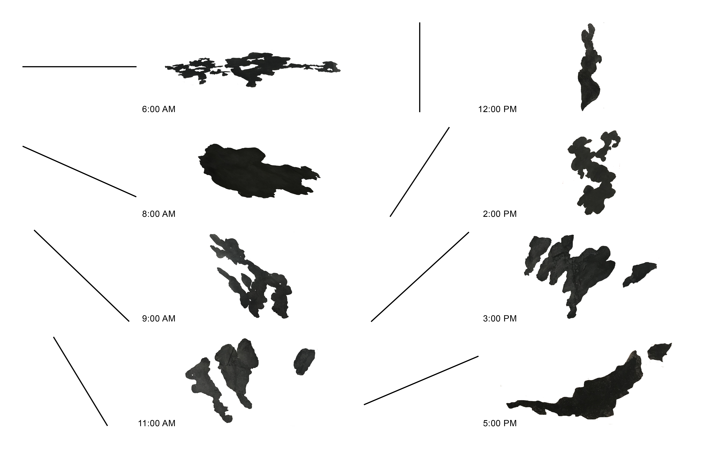
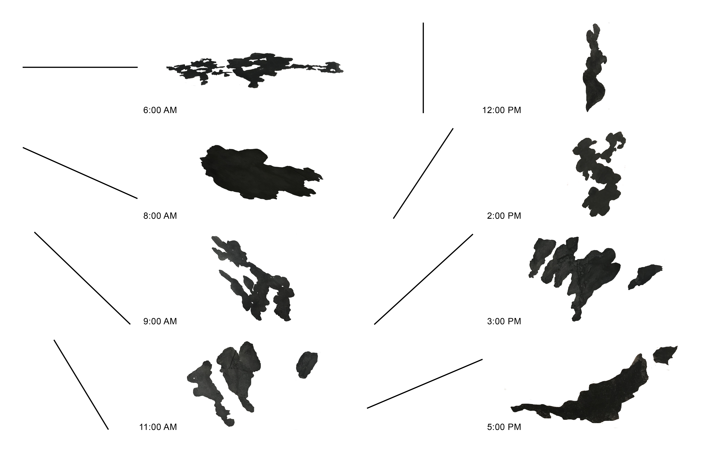
 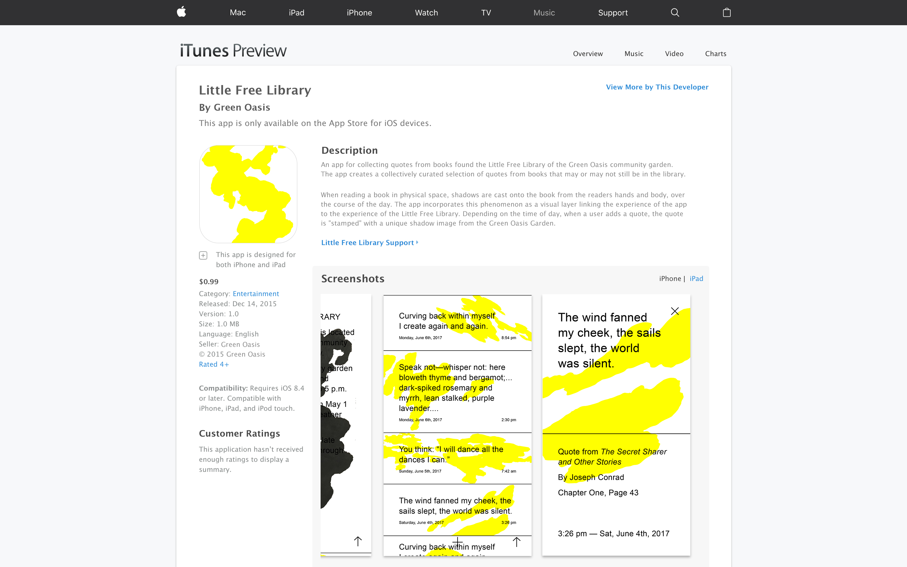
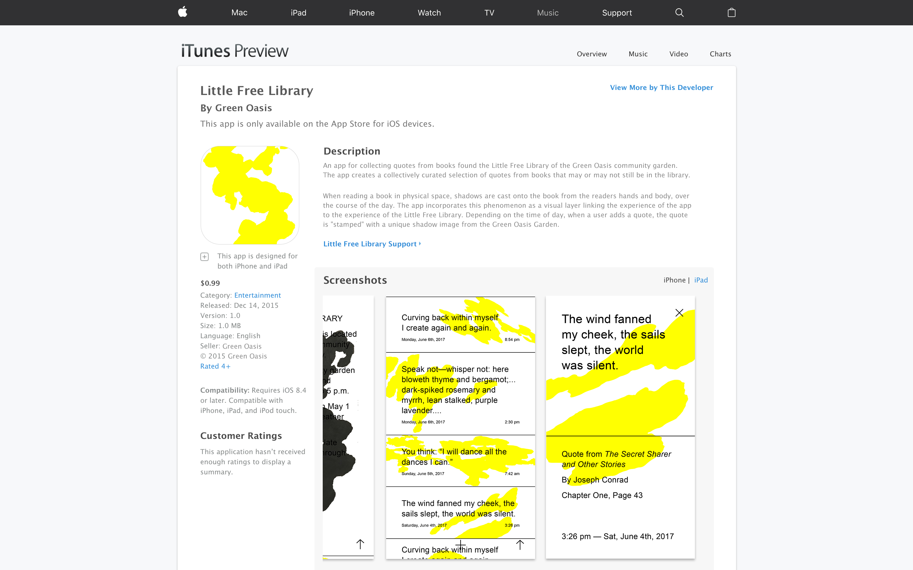
An app for collecting quotes found in the Little Free Library of the Green Oasis community garden. The app creates a collectively currated selection of quotes from books that may or may not still be in the library.
When reading a book in the physical space, shadows are cast onto the book from the readers hands and body, over the course of the day. The app incorporates this phenomenon as a visual layer linking the experience of the app to the experience of the Little Free Library. When a user adds a quote, the quote is "stamped" with a unique shadow image from the Green Oasis Garden that represents the time of day.